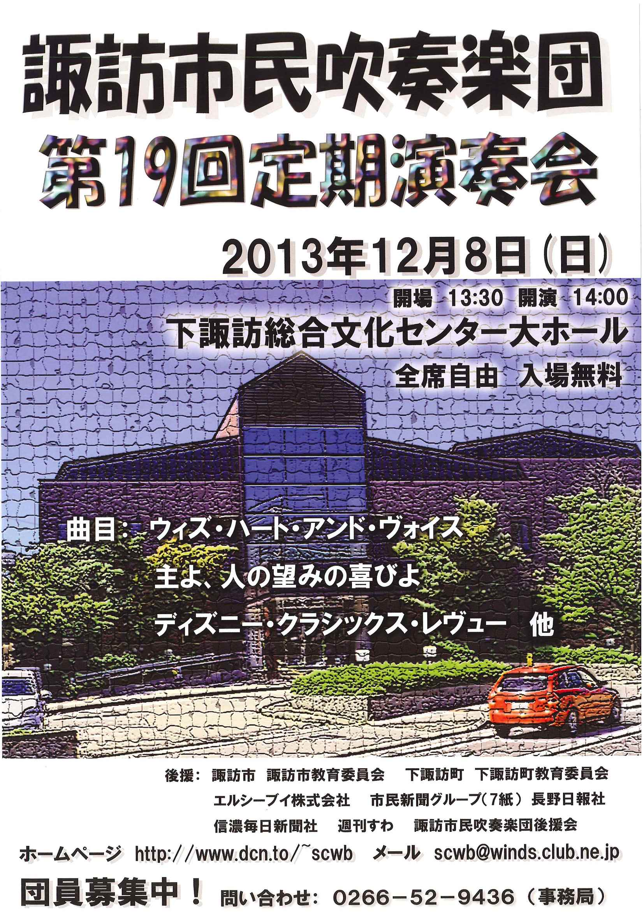

コンサート報告（2013年）
2025年 ｜
2024年 ｜
2023年 ｜
2022年
2021年 ｜
2020年 ｜
2019年 ｜
2018年 ｜
2017年
2016年 ｜
2015年 ｜
2014年 ｜
2013年 ｜
2012年
2011年 ｜
2010年 ｜
2009年 ｜
2008年 ｜
2007年
2006年 ｜
2005年 ｜
2004年 ｜
2003年 ｜
2002年
アイスキャンドル点灯式出演 演奏終了（2013.2.2）
諏訪の冬を彩るイベント「アイスキャンドル」の上諏訪地区点灯式に当団トランペットパートが出演し、ファンファーレをはじめ3曲を演奏しました。今年は厳しい寒さでアイスキャンドルも順調に完成し、多くのお客様で賑わいました。多くの皆さんに聞いていただき、誠にありがとうございました。
かんぽの宿ロビーコンサート 演奏終了（2013.4.20）
諏訪湖を一望する高台にある「かんぽの宿諏訪」で、ロビーコンサートを開催しました。宿泊のお客様、約100人の前で演奏させていただきました。夕食後のひとときを楽しんでいただけたなら大変嬉しく思います。今後ともよろしくお願いいたします。
並木DEコンサート 演奏終了（2013.5.25）
諏訪の街角で気軽に音楽と触れ合える「並木DEコンサート」もすっかり定着しましたが、その本年第1回に出演させていただきました。事前の予報では天候が心配されたのですが、雨が降ることもなく、気分の良い天候の下で演奏することができました。
多くの皆様にご来場いただき、たくさんの拍手をいただいたこと、心より感謝申し上げます。ありがとうございました。
聖母寮 慰問演奏 演奏終了（2013.7.28）
夏の聖母寮への慰問演奏も毎年恒例になってきましたが、本年は同寮の夏まつりに参加させていただくかたちになりました。例年より大きめのプログラムでしたが、多くのお客様にお聴きいただき、ありがとうございました。最後の「信濃の国」の合唱まで、楽しく演奏することができました。
諏訪湖少年野球大会 開会式出演 演奏終了（2013.8.25）
「諏訪の甲子園」諏訪湖スタジアムでの少年野球大会開会式に、入場行進と祝典音楽の演奏で参加しました。本年も下諏訪向陽高校吹奏楽部と合同で演奏させていただき、小中学生の皆さんを盛り上げられたかと思います。ご協力いただいた皆様、ありがとうございました。
老人ホームアイリス 敬老会出演 演奏終了（2013.9.14）
敬老会への出演も本年で４年連続となりました。100歳を超えるご長寿の方もいらっしゃる中、皆さんに温かく迎えていただき、楽しく演奏できました。おかげで迫力ある演奏をお届けできたかと思います。ありがとうございました。
第19回 上社の杜音楽祭 演奏終了（2013.10.6）
運営にも携わっている上社の杜音楽祭が開催されました。当日は天候にも恵まれ、暖かい気候の中で演奏することができました。恒例の諏訪市内４中学校吹奏楽部の皆さんとの合同演奏は180人編成になり、迫力あるサウンドを上社の杜に響かせることができたと思います。多くのお客様にご来場いただき、誠にありがとうございました。
第19回 定期演奏会 演奏終了（2013.12.8）
 団最大の行事となる定期演奏会を、本年は下諏訪総合文化センターで開催しました。好天にも恵まれ、昨年を大幅に上回るお客様にご来場いただきました。楽しんでいただけましたでしょうか。
今回も多くの皆様のおかげで、定期演奏会を開催することができました。ここに深く御礼申し上げます。ありがとうございました。今後とも諏訪市民吹奏楽団を、どうぞよろしくお願いいたします。
老人ホームハイム天白 慰問演奏 演奏終了（2013.12.21）
下諏訪町の老人ホームハイム天白に初めて慰問演奏に訪れました。お年寄りをはじめとする多くの皆様に温かく迎えていただき、楽しく演奏することができました。ありがとうございました。